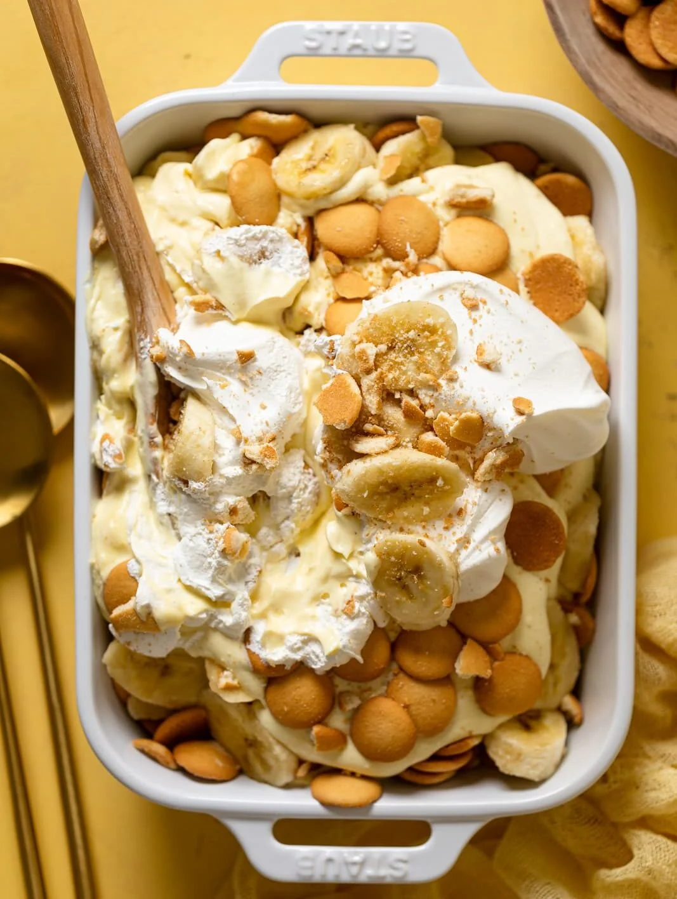

Banana Pudding Recipe

Description
A banana pudding with cream cheese, condensed milk, and vanilla wafers that's quick and easy to make. Enjoy!
Ingredients
- 1 (8 ounce) package cream cheese, at room temperature
- 1 (14 ounce) can sweetened condensed milk
- 1 (5 ounce) package instant vanilla pudding mix
- 3 cups cold skim milk
- 1 teaspoon vanilla extract
- 1 (8 ounce) container frozen whipped topping, thawed
- ½ (12 ounce) package vanilla wafers
- 4 bananas, sliced
Directions
- Beat cream cheese in a large bowl until fluffy. Beat in condensed milk, then
pudding mix. Gradually mix in cold milk until smooth, followed by vanilla.
- Fold in 1/2 of the whipped topping.
- Line the bottom of a 9x13-inch dish with vanilla wafers
- Arrange sliced bananas evenly on top.
- Cover with pudding mixture.
- Top with remaining whipped topping.
- Cover and chill in the refrigerator for at least 3 hours before serving.